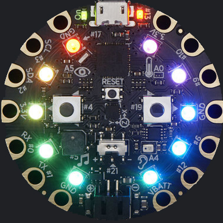

The Mission of the Computer Science Club is to explore many fun and unique ways of using code. We use and combine
many different aspects of computer science including: Code, Hardware, and Circuitry. Currently the main circuit
board we will be using is the Adafruit Circuit Playground Express which is ideal because it has many built in
modules and sensors. The goal of the club is to be a good mix of learning and fun. Every member will have time to
experiment with the many electrical components provided to them and create what they can imagine. Every member of
the club will have access to their own Adafruit Circuit Playground Express and a variety of electrical components.
Currently the electrical components we will be using include motion sensors, LEDs, buttons, switches, RGB LEDs,
and many more! All of these components will be combined in many different ways to produce a variety of fun
projects and circuits. To find out more about how to join please press on the Contact tab. I hope to see you at
the next meeting.

This year the club will also be working with local elementary schools to teach the 5th graders about circuitry and
hardware. I am currently in contact with Westlake Hills elementary and plan to add in as many Elementary schools
as possible. The plan is to visit the elementary schools on a monthly or bimonthly basis and give all of the kids
access to kits designed to allow them to construct many fun projects. I would appreciate any members who would
like to join me at the elementary schools, but attendance is completely optional. I hope to inspire the 5th
graders to pursue a passion of computer science just as I did when I first learned to work with hardware.